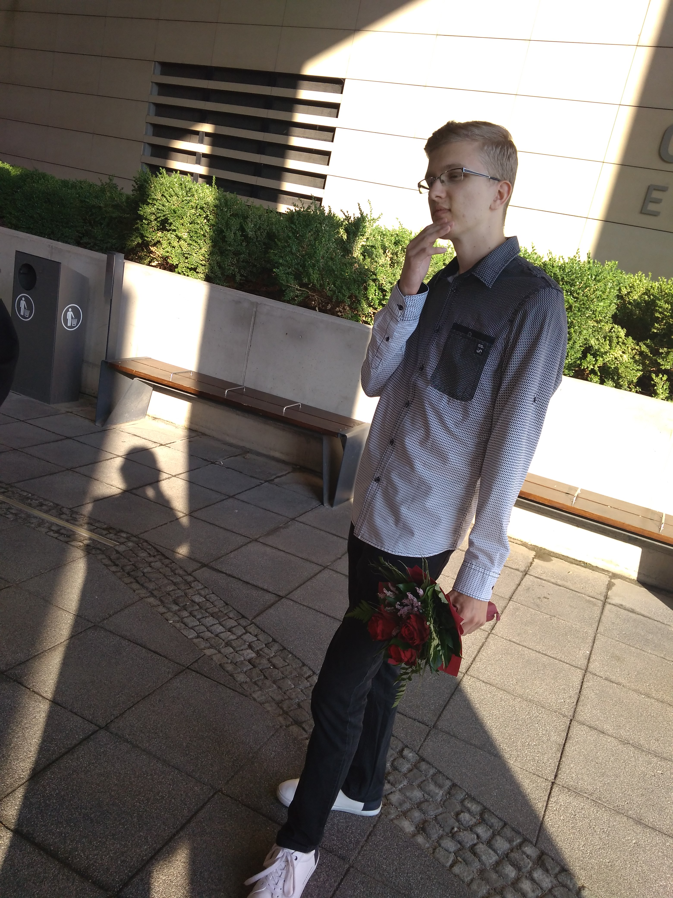

 Bemutatkozás
Varga Tamás vagyok 21 éves egyetemi hallgató. Jelenleg A budapesti Műszaki és Gazdaságtudományi Egyetemen tanulok energetikai mérnöki alapszakon. Ez a portfólió, bemutatja a háziállataimat és betekintést mutat a sporttal kapcsolatos érdeklődésemről és eredményeimről. A sportnak köszönhetően rengeteg embert ismertem meg, de emelett a tanulmányaimat se raktam félre. Pécsen végeztem a Janus Pannonius Gimnáziumban, azt megelőzően a Siklósi Batthyány Kázmér Általános Iskola volt az, ami megadta az alapokat ahhoz, hogy jelenlegi tanulmányaimat tudjam végezni. Hobbik: hobbi szintű sportolás, videójáték.